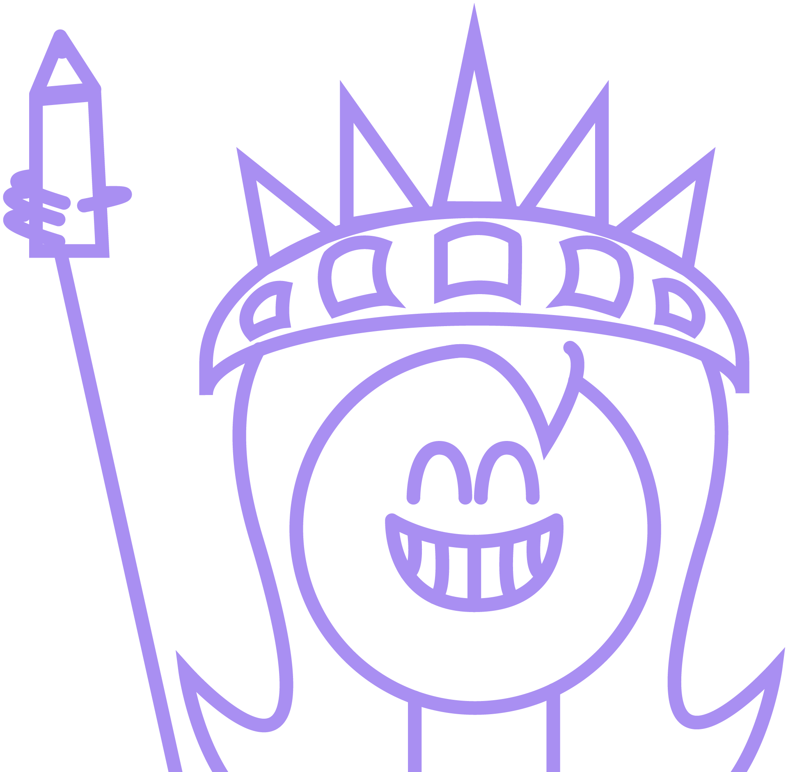
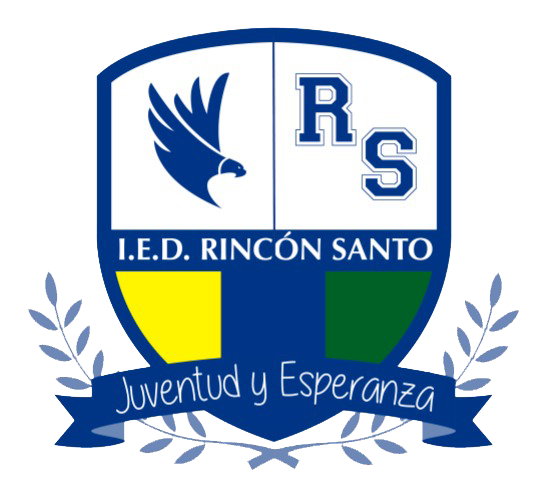
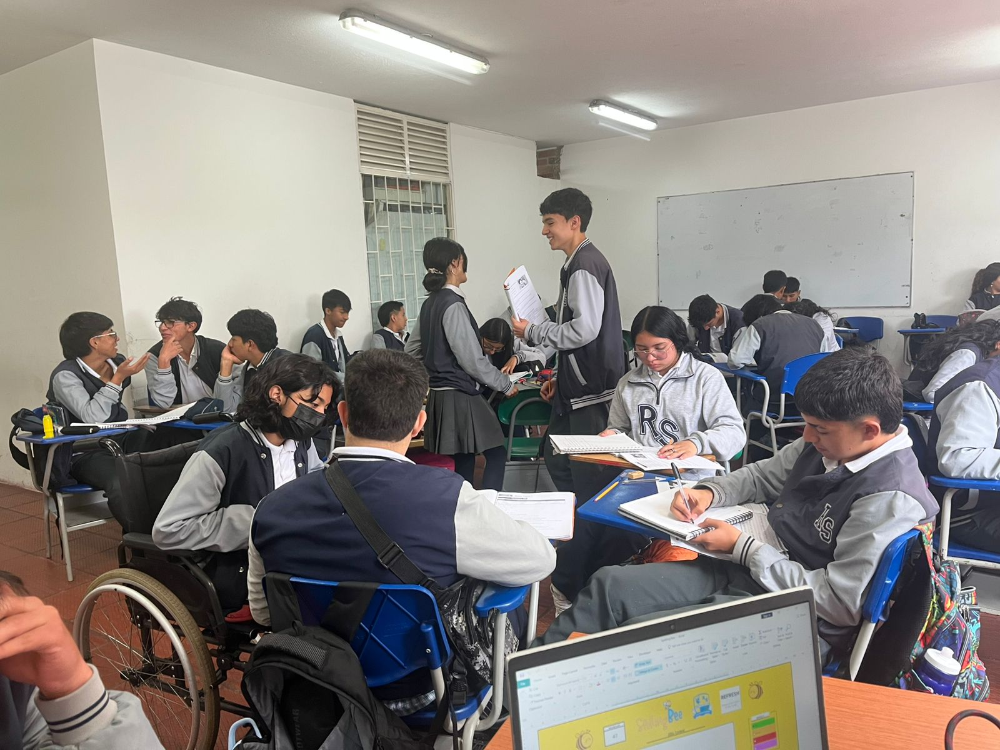

¡Bienvenido a tu aventura de aprender inglés!
Probar el prototipo


Es una iniciativa de aprendizaje para la institución educativa IED Rincón Santo en Cajicá - Cundinamarca - Colombia.

Este proyecto fue pensado como estrategia innovadora de aprendizaje de inglés para los estudiantes en bachillerato por medio de contenido como lecturas, videos, música y videojuegos; todo esto, también en una plataforma que muestra el progreso y calificaciones de la asignatura.
